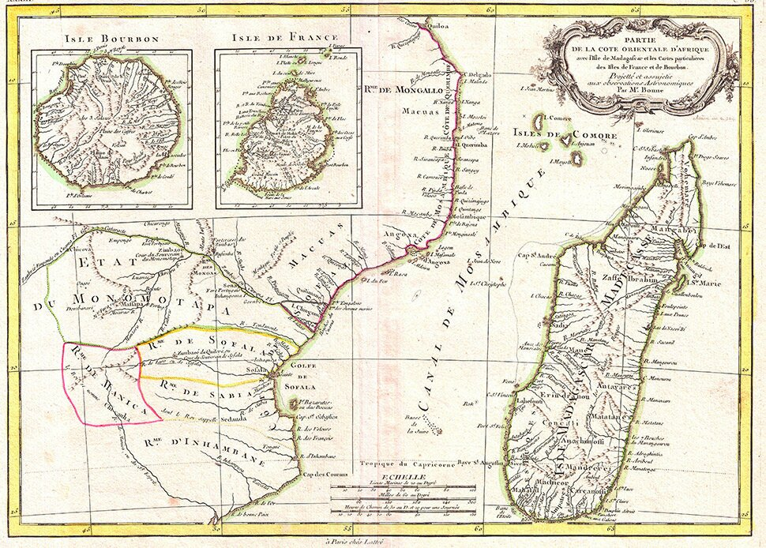
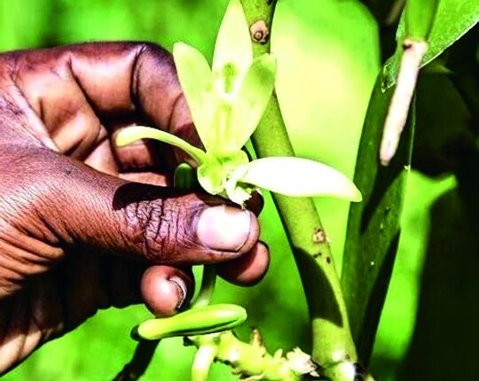
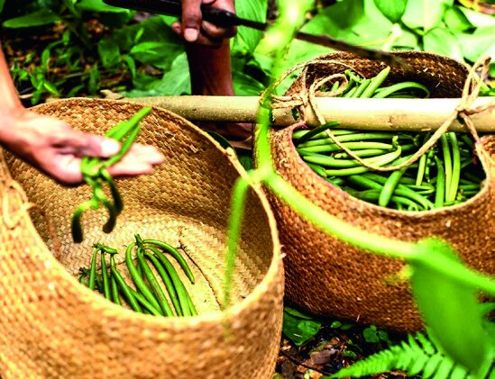
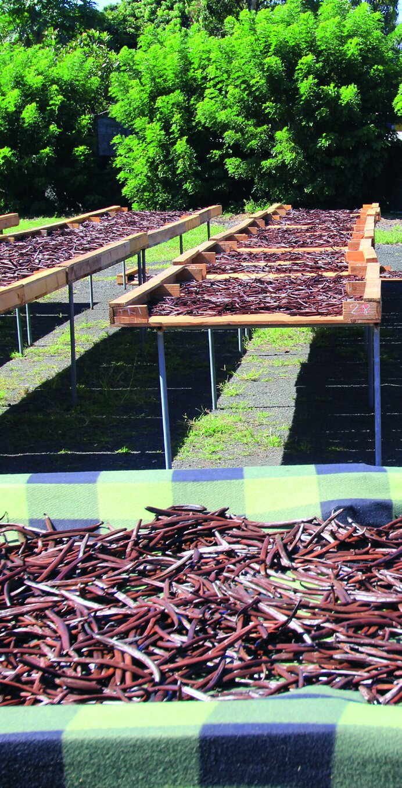

Une aventure humaine, familiale et gustative entre la France et l'île de Madagascar.
Cette île fascinante a attiré, au fil des siècles, des explorateurs venus des quatre coins du monde, traversant l'océan Indien pour découvrir ses richesses.
C'est aussi l'île des parfums doux et envoûtants de la vanille, cet aphrodisiaque naturel… la vanille planifolia, épice d'exception, célèbre pour son arôme riche, doux et complexe.
Ce trésor est notre héritage, fruit d'un long travail et d'un savoir-faire traditionnel malgache, préservé dans un patrimoine agricole unique et naturel.



Notre coopérative française, « Sweet Vanilla Heritage », est spécialisée dans l'import-export de gousses de vanille. Nous nous consacrons à la sélection et à la commercialisation de vanille de Bourbon exclusivement produite à Madagascar.
Notre vanille, cultivée traditionnellement par notre famille, est récoltée et préparée à la main dans la région de la S.A.V.A — qui regroupe les districts de Sambava, Antalaha, Vohemar et Andapa. Plus précisément, nos gousses proviennent de notre village pittoresque d'Antalaha, niché au nord-est de l'île rouge.
Chaque gousse est le fruit d'une pollinisation manuelle, d'une récolte minutieuse et d'un affinage patient — le même geste transmis de génération en génération.
« Notre démarche est avant tout une aventure humaine, inscrite dans le temps et dans le respect des hommes et des femmes qui contribuent chaque jour au rayonnement de Sweet Vanilla Héritage. C'est une histoire de famille, d'amitié et de passion, reliant la France et Madagascar. »
— David Lastouillat, fondateur
Grâce à une sélection rigoureuse, nous collaborons exclusivement avec des acteurs de la restauration des grands chefs et des maîtres pâtissiers — grandes tables parisiennes, Monaco, Londres, Suisse, Inde, Saint-Barthélémy. Que ce soit pour sublimer des desserts raffinés ou accompagner des viandes et poissons, la vanille Bourbon de Madagascar transforme chaque plat en une expérience gustative inoubliable.
Chez Sweet Vanilla Heritage, nous exportons des gousses de vanille d'une qualité exceptionnelle, issues d'une culture authentique et respectueuse de l'environnement — sans conservateurs, séchées naturellement puis conditionnées sous vide d'air pour préserver tous leurs arômes.
Nos entrepôts, basés en Dordogne, garantissent une gestion rigoureuse des stocks et une livraison à votre porte dans le meilleur délai, en France comme à l'international.
Sans conservateur Séchage traditionnel Sous vide d'air
Laissez-vous séduire par la richesse et la finesse de notre vanille Bourbon, notre héritage…
Découvrir nos vanilles